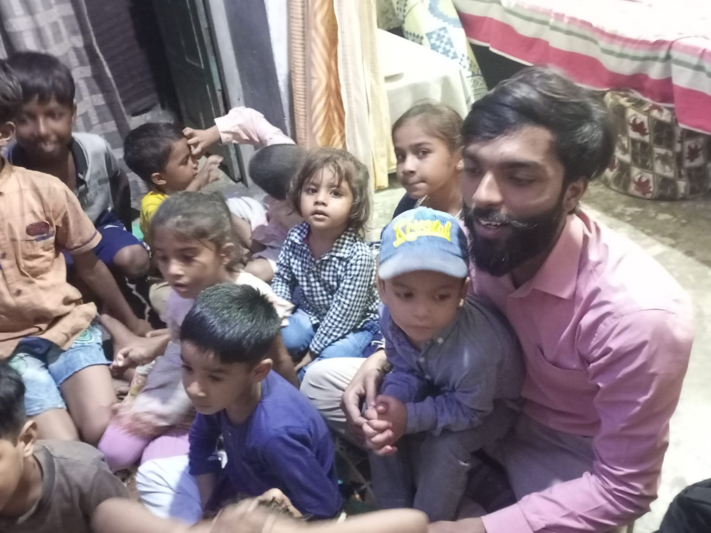
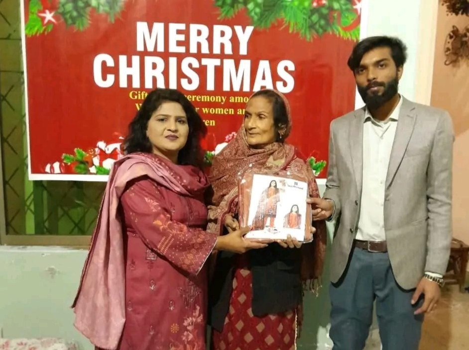
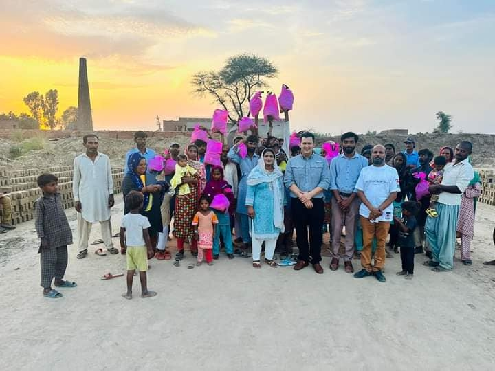

Hope for Nations Ministry Pakistan is a Christian charity serving orphans, labor workers, and struggling families. Your donation from the US or UK provides food, education, and the love of Christ to children in need.

We assist daily wage workers and poor Christian families with emergency relief, food distribution, medical care, and spiritual encouragement through Gospel outreach.

Our evangelism mission combines practical support with Biblical teaching, church outreach, and discipleship programs across underserved communities in Pakistan.
Learn About Us
Hope for Nations Ministry Pakistan is a faith-based Christian nonprofit dedicated to supporting orphans, poor families, and daily labor workers. Through food programs, education support, emergency relief, and evangelism outreach, we bring both physical help and spiritual hope. We partner with donors from the United States and United Kingdom who desire to make a lasting impact in Christian communities across Pakistan.
What We Do
Monthly food distribution for struggling Christian families and daily wage laborers.
School fees, uniforms, books, and Christian mentoring for vulnerable children.
Emergency medical aid for poor families who cannot afford treatment.
Providing safe drinking water in underserved communities.
Helping repair unsafe homes and support families in crisis situations.
Bible teaching, prayer meetings, discipleship, and church outreach programs.
Donate Now
Your generous donation from the United States or United Kingdom helps provide food, education, medical care, and Christian discipleship to orphans and struggling families. Partner with Hope for Nations Ministry Pakistan and make an eternal impact.
Become A Partner
Join as a prayer partner, monthly sponsor, or ministry supporter. Together we can empower labor workers, care for orphans, strengthen Christian families, and spread the Gospel throughout Pakistan.
Ministry Updates